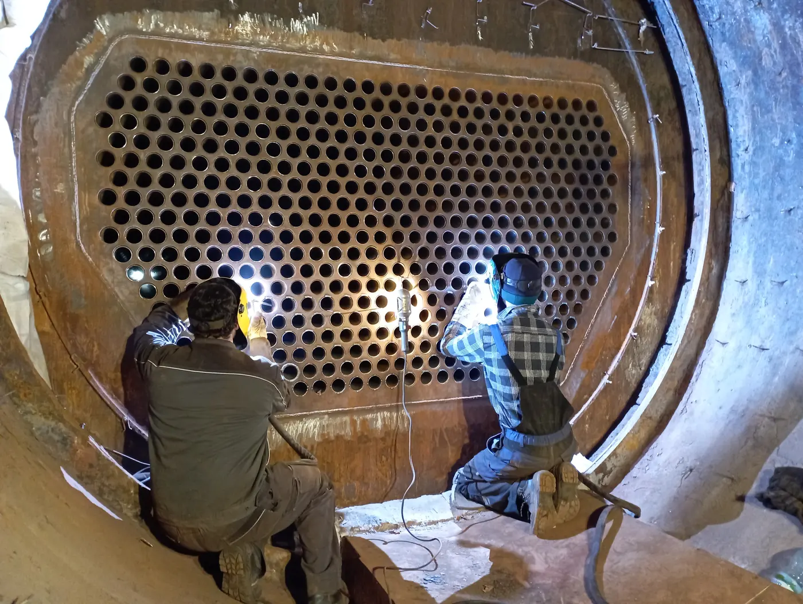

Nasza specjalność
Remonty i modernizacje urządzeń ciśnieniowych
Remonty kompleksowe i doraźne oraz modernizacje urządzeń i instalacji podlegających Urzędowi Dozoru Technicznego. Podejmujemy się zadań trudnych technicznie — także na obiektach czynnych.
- remonty kompleksowe
- remonty doraźne
- modernizacje urządzeń i instalacji